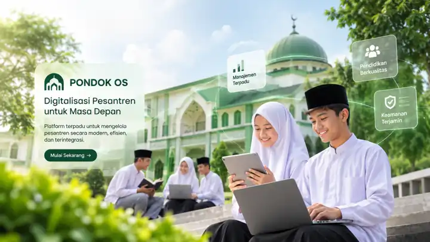

Data lebih tertata
Bangun master data lembaga, santri, wali, pengajar, dan pegawai dengan struktur yang jelas serta relasi antarmodul.
Satukan tata kelola pendidikan, kesantrian, administrasi, dan unit usaha pesantren dalam satu arah kerja yang lebih tertib.
PONDOK OS dirancang sebagai platform modular yang dapat berkembang mengikuti struktur dan kebutuhan setiap lembaga — bukan sistem kaku yang memaksa semua pesantren bekerja dengan cara yang sama.

Data yang tersebar membuat pekerjaan berulang, koordinasi lambat, dan laporan sulit disatukan. PONDOK OS dibangun untuk menata proses tersebut dalam satu fondasi digital.
Bangun master data lembaga, santri, wali, pengajar, dan pegawai dengan struktur yang jelas serta relasi antarmodul.
Hubungkan proses akademik, administrasi, keuangan, dan operasional agar informasi tidak terjebak di masing-masing bagian.
Kelola kewenangan berdasarkan organisasi, peran, dan izin. Aktivitas penting dirancang agar dapat ditelusuri.
Aktifkan dan kembangkan ruang kerja sesuai prioritas lembaga. Daftar berikut adalah cakupan produk yang dirancang; tingkat kesiapan tiap modul berbeda dan terus dikembangkan.
Tahun ajaran, kelas, mata pelajaran, jadwal, presensi, penilaian, dan rapor.
Pendaftaran calon santri, kelengkapan dokumen, seleksi, dan daftar ulang.
Administrasi asrama, penempatan kamar, perizinan, pembinaan, dan komunikasi wali.
Anggaran, kas, transaksi, jurnal, tagihan, dan pelaporan keuangan.
Data pegawai, struktur organisasi, presensi, cuti, dan proses payroll.
Aset, gudang, permintaan barang, pembelian, mutasi, dan stok opname.
Katalog, eksemplar, peminjaman, pengembalian, dan koleksi digital.
Hubungan keluarga, komunikasi lembaga, alumni, donatur, dan kemitraan.
Berita, pengumuman, halaman profil, agenda, dan publikasi pesantren.
Fondasi pengelolaan koperasi, kantin, toko, dan kegiatan usaha pesantren.
Ruang pengembangan untuk kebutuhan satuan pendidikan dan pelaporan terkait.
Arah pengembangan asisten untuk pemantauan, pengingat, dan rekomendasi yang disetujui pengelola.
Catatan: penyebutan modul menunjukkan cakupan dan arah pengembangan produk, bukan klaim bahwa seluruh fitur telah tersedia atau siap digunakan.
Mulai dari data induk yang tertata, lanjutkan ke proses harian, lalu gunakan informasi yang terkumpul untuk memantau operasional lembaga.
Jelajahi ruang kerja ↗Kelola data santri, wali, pengajar, pegawai, kelas, dan unit lembaga sebagai fondasi bersama.
Hubungkan kegiatan akademik, kesantrian, keuangan, SDM, inventaris, dan administrasi.
Bangun visibilitas melalui ringkasan, laporan, jejak aktivitas, dan kontrol kewenangan.
Informasi santri, keluarga, pegawai, dan keuangan membutuhkan perlindungan yang serius. Karena itu, arsitektur PONDOK OS menempatkan isolasi data dan kontrol akses sebagai bagian inti sistem.
Masuk ke aplikasi ↗Kontrol keamanan telah memiliki implementasi fondasi dan pengujian tertentu; hal ini bukan sertifikasi keamanan atau jaminan bahwa seluruh kontrol operasional telah selesai.
Visi PONDOK OS mencakup pilihan penggunaan cloud, hybrid, dan instalasi lokal. Kesiapan tiap mode berbeda; saat ini jalur cloud-connected menjadi fondasi implementasi, sedangkan offline penuh masih dalam roadmap.
Kenali fondasi PONDOK OS dan lihat perkembangan ruang kerja digital pesantren.